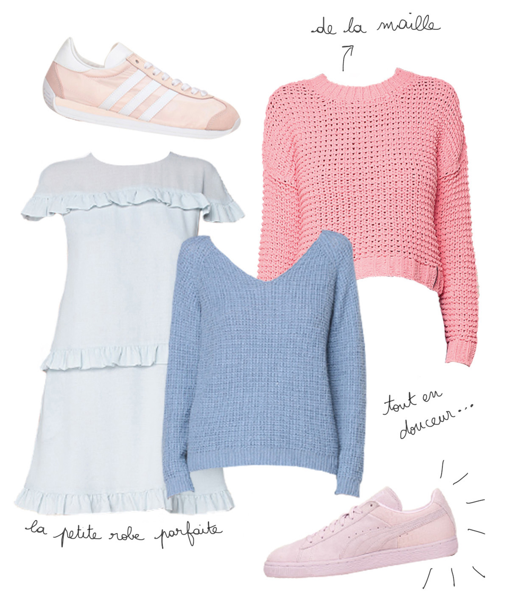
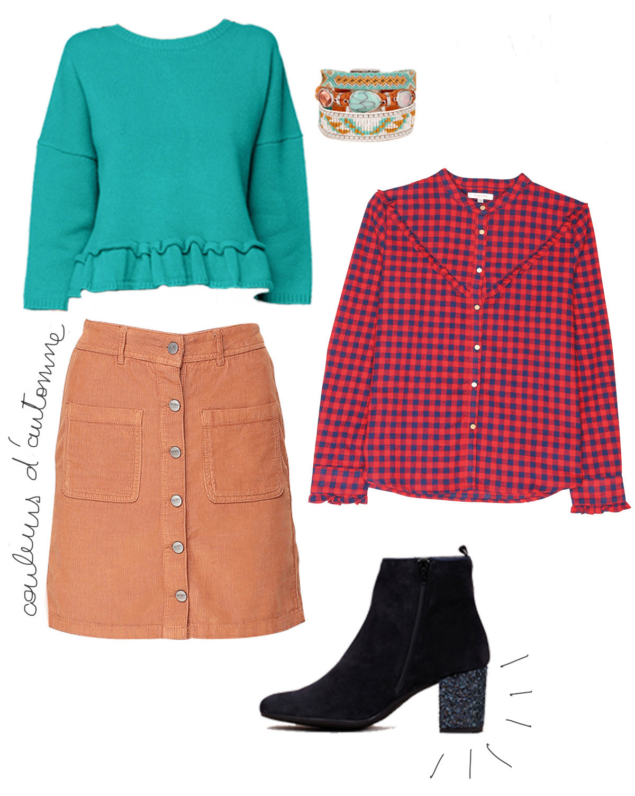

À force de vous rabâcher que j'en ai ras la casquette de la nouvelle collection automne/hiver et de ses coloris ternes déprimants, je me suis dit qu'une wishlist colorée ne nous ferait pas de mal pour se remonter le moral ! Perso, j'ai toujours besoin de couleurs dans ma penderie, encore plus les jours de pluie. Porter une robe flashy, un accessoire bariolé ou un pull pastel me réconforte au plus haut point.
Alors, pourquoi s'en priver ? Voici ma sélection shopping pour une rentrée colorée. Faites rentrer de la couleur dans vos penderies et souriez même les jours gris !
 